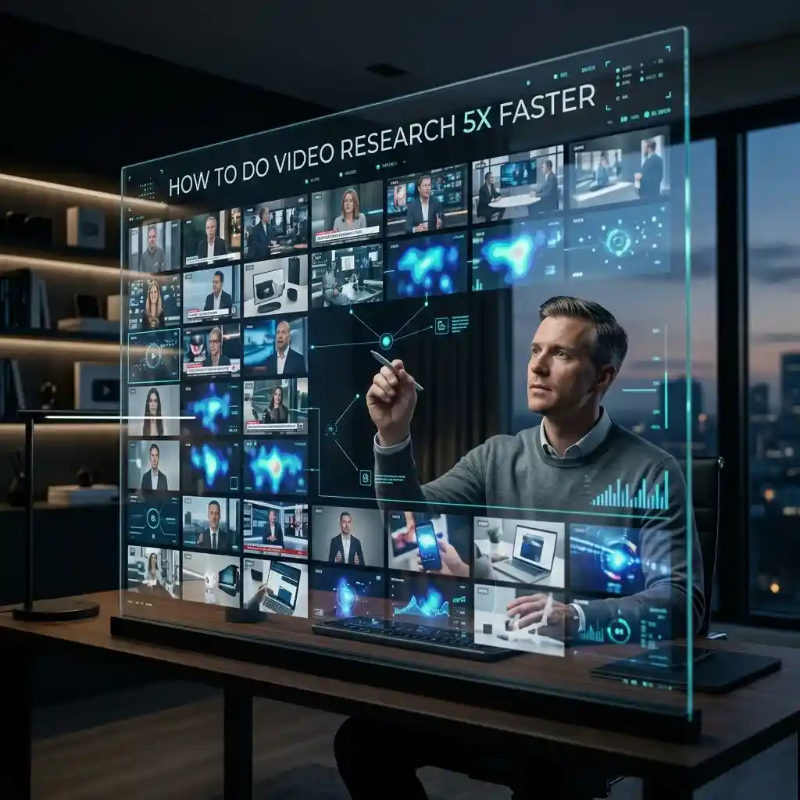

How to Do Video Research 5x Faster: High-Velocity Information Gathering

In the data-heavy world of 2026, the primary challenge for researchers, academics, and creators is no longer "finding" information—it's "filtering" it. Video has become the dominant medium for knowledge sharing, but its linear nature makes it inherently slow to consume. If you watch five 20-minute videos sequentially to research a topic, you've spent 100 minutes of your life. In a competitive environment, this is unacceptable. To stay ahead, you must learn high-velocity information gathering. By using a YouTube multi-viewer, you can perform video research 5x faster without sacrificing depth or accuracy.
The "Birds-Eye" Advantage: Beyond Sequential Consumption
Sequential consumption—watching one video after another—is a legacy habit from the era of television. It forces your brain to "wait" for the information to find you. High-velocity research flipped this script: you go out and "hunt" the information. By loading multiple videos on the same topic into a high-density grid like YoutubeMulti, you gain a "Birds-Eye" view that allows your brain to process visual and auditory signals in parallel.
Method 1: The "Scan and Deep-Dive" Protocol
The core of fast research is the "Scan and Deep-Dive" protocol. Instead of committing to one video, you load ten. You start them all simultaneously (muted) and watch the visual cues—titles, diagrams, on-screen text, and presenter body language.
- Visual Scanning: You can quickly identify which videos are shallow "clickbait" and which contain high-density data visualizations or expert interviews.
- The Deep-Dive: As soon as you spot a valuable segment in one cell, you maximize that screen and turn on the audio. You extract the data you need, then immediately return to the grid to continue the scan.
This method allows you to "scrub" through 200 minutes of content in under 30 minutes, ensuring you only spend time on the most valuable 10% of the available material.
Method 2: Cross-Source Verification and Triangulation
In research, a single source is a liability. Truth is found in triangulation. When researching a controversial topic or a new scientific discovery, use your video grid to line up experts from different institutions. By watching their explanations side-by-side, you can instantly hear the consensus points and, more importantly, the contradictions.
This real-time verification prevents you from being misled by a single biased source. It allows you to build a "Composite Truth" in a fraction of the time it would take to read through multiple papers or watch several separate documentaries.
Method 3: Narrative Audit and Pattern Recognition
For creators and market researchers, the goal is often to understand the "Current Narrative" around a topic. What are people saying? What are their common counter-arguments? By loading a 4x4 grid of the top-trending videos in a niche, you can perform a narrative audit.
You'll notice that many creators use the same stock footage, reference the same news articles, or make the same specific points. Once you identify these repetitive patterns, you can ignore the "noise" and look for the unique outliers. This is how you find the "Gaps in the Market" that lead to truly original content or breakthrough research papers.
Technical Setup for Research Power Users
To operate at 5x speed, your workstation must be optimized. YoutubeMulti provides the critical stability needed for this intensity, but user discipline is also required:
- Hover-to-Listen: Use this feature to move your audio focus across the grid without having to click. It allows for a "glance-and-listen" workflow that matches the speed of your cognitive processing.
- Persistent Layouts: Create layouts for specific research "stacks." For example, a "Tech Specs" stack might feature 5 product reviews and 5 tear-down videos.
- Hardware Acceleration: Ensure your GPU is doing the heavy lifting. High-velocity research is as much about your graphics card as it is about your brain.
Managing "Information Overload" vs. "Information Intensity"
Critiques often argue that this speed leads to "Information Overload." However, there is a difference between "Overload" (which is chaotic) and "Intensity" (which is controlled). High-velocity research is an active, intensely focused state. It requires a clear "Research Question" before you open the grid. When you are looking for specific data, your brain is naturally wired to filter out the irrelevant pixels.
Conclusion: The Future of the Video Scientist
In 2026, the most successful researchers are those who treat video as a data lake rather than a movie theater. By embracing the multi-stream mindset and utilizing the advanced scaling features of YoutubeMulti, you transform yourself into a "Video Scientist." You move faster, you see more, and your conclusions are built on a broader, more verified foundation of knowledge.
The era of "watching" is over. The era of "Mining" has begun.